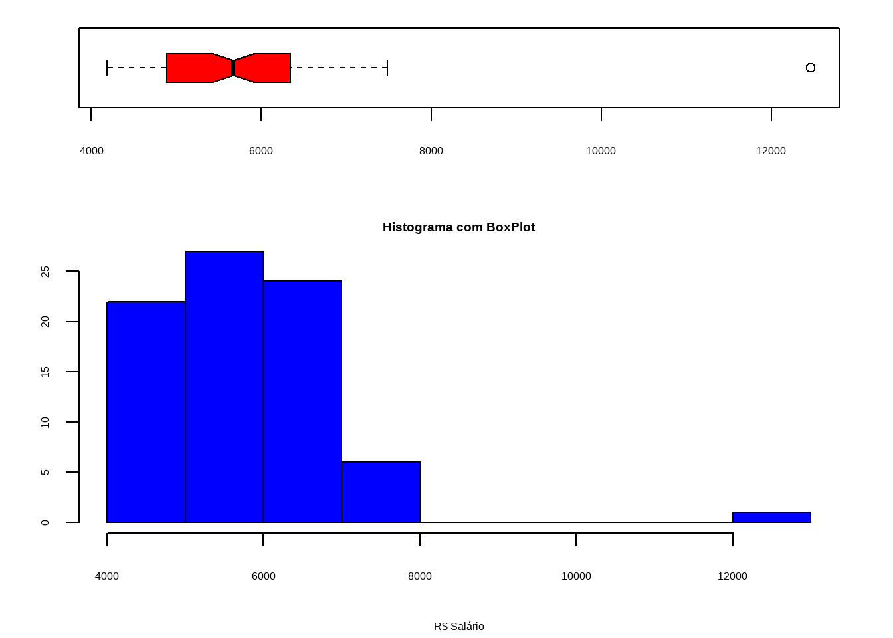

setwd('C:/Users/usuario/Documents/Modelo_Regressao')1 Análise Exploratória de Dados (EDA)
Note
Mini Roteiro: AED
Um Mini Roteiro para Realizar uma Análise Exploratória de Dados usando a Linguagem de Programação \(R_{4.3}\) com auxílio da IDE RStudio.
Em estatística, a análise exploratória de dados (AED) é uma abordagem à análise de conjuntos de dados de modo a resumir suas características principais, frequentemente com métodos visuais. Um modelo estatístico pode ou não ser usado, mas primariamente a AED tem como objetivo observar o que os dados podem nos dizer além da modelagem formal ou do processo de teste de hipóteses.
A análise exploratória de dados foi promovida pelo estatístico norte-americano John Tukey, que incentivava os estatísticos a explorar os dados e possivelmente formular hipóteses que poderiam levar a novas coletas de dados e experimentos.
1.1 Diretório de Trabalho
Primeiro Passo é definir o diretório de trabalho no R
1.2 Carregar Dataset
Segundo Passo é carregar a base de dados, chamada de mercado. Para isso é necessário instalar o pacote para leitura de arquivo com extensão do tipo excel(.xlsx) por meio do comando install.packages(“readxl”).
Posteriormente, ativar o pacote no R com o comando library(readxl). Tendo um detalhe fundamental, que se instala somente um vez o pacote, e se ativa toda vez que for usar.
library(readxl)
mercado <- read_excel('mercado.xlsx')
mercado2 <- read_excel('mercado2.xlsx')A importância da apresentação dos dados é fundamental no início da faxina dos dados.
Para a apresentação dos dataset contamos com alguns pacotes na linguagem R que possibilitam a apresentação de tabelas de maneira bastante satisfatória (de forma elegante e até interativa).
O pacote DT é uma excelente opção quando se trata de uma apresentação rápida, geral e dinâmica sobre a base de dados.
O pacote DT fornece uma interface R para a biblioteca JavaScript DataTables. Objetos de dados R (matrizes ou quadros de dados) podem ser exibidos como tabelas em páginas HTML, e DataTables fornece filtragem, paginação, classificação e muitos outros recursos nas tabelas.
Segue a base de dados (n=80) referentes as características dos Funcionários que trabalham no Supermercado Formosa, na cidade de Belém, Estado do Pará, em 2023.
library(DT)
datatable(mercado,
class = 'cell-border stripe',
editable = 'cell',
caption = 'Tabela 01: Banco de Dados sobre Funcionários do Supermercado Formosa, Belém - Pará, 2023.')1.3 Identificar os Tipos de Variáveis
Utilizamos a função diagnose(), do paocte dlookr na linguagem R, para identificar os tipos de variáveis para análise.
A função diagnose() da biblioteca dlookr que retorna por variável qual o tipo dela, contagem de valores faltantes, frequência de faltantes em relação à base toda.
library(dlookr)
mercado %>% dlookr::diagnose()# A tibble: 6 × 6
variables types missing_count missing_percent unique_count unique_rate
<chr> <chr> <int> <dbl> <int> <dbl>
1 EDUCAÇÃO character 0 0 2 0.025
2 CARGO character 0 0 4 0.05
3 LOCAL character 0 0 2 0.025
4 IDADE numeric 0 0 36 0.45
5 TEMPOCASA numeric 0 0 21 0.262
6 SALARIO numeric 0 0 60 0.75 1.4 Variáveis Qualitativas
1.4.1 Tabelas de Frequência: Simples
table(mercado2$CARGO)
AUXILIAR DIRETOR GERENTE
37 12 30 table(mercado2$EDUCAÇÃO)
SECUNDÁRIO SUPERIOR
15 64 table(mercado2$LOCAL)
CAPITAL INTERIOR
44 35 1.4.2 Tabelas de Frequência: Proporção
prop.table(table(mercado2$CARGO))*100
AUXILIAR DIRETOR GERENTE
46.83544 15.18987 37.97468 prop.table(table(mercado2$EDUCAÇÃO))*100
SECUNDÁRIO SUPERIOR
18.98734 81.01266 prop.table(table(mercado2$LOCAL))*100
CAPITAL INTERIOR
55.6962 44.3038 1.4.3 Tabelas de Contigência
O pacote gtsummary fornece uma maneira elegante e flexível de criar tabelas analíticas e de resumo prontas para publicação usando a linguagem de programação R.
A função tbl_summary() calcula estatísticas descritivas para variáveis contínuas, categóricas e dicotômicas em R e apresenta os resultados em uma tabela de resumo bonita e personalizável, pronta para publicação.
library(dplyr)
library(gtsummary)
mercado %>%
select(
LOCAL,
CARGO,
IDADE,
TEMPOCASA,
EDUCAÇÃO,
SALARIO) %>%
tbl_summary(by = LOCAL,
statistic = list(all_continuous() ~ "{mean} ({sd})")) %>%
modify_header(label = "**VARIAVEIS**") %>%
modify_caption("Tabela 01. Característica Salariais Formosa") %>%
add_n() %>%
add_difference() %>%
bold_p(t = 0.05) %>%
bold_labels() %>%
italicize_levels()| VARIAVEIS | N | CAPITAL N = 451 |
INTERIOR N = 351 |
Difference2 | 95% CI2 | p-value2 |
|---|---|---|---|---|---|---|
| CARGO | 80 | |||||
| AUXILIAR | 17 (38%) | 20 (57%) | ||||
| DIRETOR | 12 (27%) | 0 (0%) | ||||
| GERENTE | 15 (33%) | 15 (43%) | ||||
| PRESIDENTE | 1 (2.2%) | 0 (0%) | ||||
| IDADE | 80 | 53 (9) | 46 (9) | 6.7 | 2.7, 11 | 0.001 |
| TEMPOCASA | 80 | 13 (7) | 8 (6) | 5.7 | 2.7, 8.7 | <0.001 |
| EDUCAÇÃO | 80 | |||||
| SECUNDÁRIO | 7 (16%) | 8 (23%) | ||||
| SUPERIOR | 38 (84%) | 27 (77%) | ||||
| SALARIO | 80 | 6,096 (1,300) | 5,369 (718) | 727 | 271, 1,183 | 0.002 |
| 1 n (%); Mean (SD) | ||||||
| 2 Welch Two Sample t-test | ||||||
| Abbreviation: CI = Confidence Interval | ||||||
1.5 Variáveis Quantitativas
1.5.1 Medidas Resumo Geral
A função mais famosa para a estatística descritiva no R, é a chamada de summary(), que dá a amplitude dos dados.
A função summary() do pacote basic, retorna boa parte da estatística descritiva como os quartis, média, mediana, mínimo, máximo e as espécies que há na tabela. É importante saber que de ante-mão, quanto mais próxima a mediana estiver da média, maior a probablidade de a destribuição dos dados ser gaussiana. Esta forma de descrição é mais utilizada para uma obtenção rápida dos parâmetros dos dados.
summary(mercado2$IDADE) Min. 1st Qu. Median Mean 3rd Qu. Max.
30.00 43.50 49.00 49.62 55.50 72.00 summary(mercado2$TEMPOCASA) Min. 1st Qu. Median Mean 3rd Qu. Max.
0.0 3.5 12.0 10.8 16.5 25.0 summary(mercado2$SALARIO) Min. 1st Qu. Median Mean 3rd Qu. Max.
4187 4894 5660 5693 6270 7481 1.5.2 Interpretação p/ Salário
o 1º quartil(1 st Qu.) indica que 25% dos funcionários têm renda salarial menor ou igual a R$ 4.894 e o 3º quartil(3 rd Qu.) indica que 75% têm renda menor ou igual a R$ 6.306.
Estes dois valores indicam que 50% dos funcionários tem renda nesse intervalo, o que já nos dá uma idéia de variabilidade da Renda.
Quanto maior a diferença entre o 3º e o 1º quartil, maior a dispersão da variável.
1.5.3 Análise Geral
O pacote skimr é um função que nos fornece medidas resumo de variáveis de uma base de dados de interesse. Ele pode ser visto como uma alternativa mais completa para a função summary() do R Base para gerar uma tabela geral sobre a base de dados, fornecendo um primeiro olhar sobre o fenômeno estudado.
library(skimr)
mercado |> skim()| Name | mercado |
| Number of rows | 80 |
| Number of columns | 6 |
| _______________________ | |
| Column type frequency: | |
| character | 3 |
| numeric | 3 |
| ________________________ | |
| Group variables | None |
Variable type: character
| skim_variable | n_missing | complete_rate | min | max | empty | n_unique | whitespace |
|---|---|---|---|---|---|---|---|
| EDUCAÇÃO | 0 | 1 | 8 | 10 | 0 | 2 | 0 |
| CARGO | 0 | 1 | 7 | 10 | 0 | 4 | 0 |
| LOCAL | 0 | 1 | 7 | 8 | 0 | 2 | 0 |
Variable type: numeric
| skim_variable | n_missing | complete_rate | mean | sd | p0 | p25 | p50 | p75 | p100 | hist |
|---|---|---|---|---|---|---|---|---|---|---|
| IDADE | 0 | 1 | 49.75 | 9.59 | 30.0 | 43.75 | 49.00 | 56.0 | 72.0 | ▃▇▇▃▃ |
| TEMPOCASA | 0 | 1 | 10.89 | 7.40 | 0.0 | 3.75 | 12.50 | 17.0 | 25.0 | ▇▃▅▆▃ |
| SALARIO | 0 | 1 | 5777.62 | 1138.19 | 4186.6 | 4894.30 | 5673.45 | 6306.3 | 12465.8 | ▇▇▁▁▁ |
Veja que a saída da função skim mostra uma visão geral da base de dados, nos dando informações como número de linhas, número de colunas, e os tipos das colunas
Ela fornece também informações individuais sobre cada coluna da base, separando as colunas por tipo: cada tipo nos dá um conjunto diferente de estatísticas, que façam sentido para aquele tipo de dado.
1.5.4 Relação Gráfica: Variáveis Quantitativas
1.5.4.1 Histograma com Boxplot
Conhecer como as variáveis se relacionam também é um passo muito importante antes da elaboração de um modelo quantitativo.
library(magrittr)
library(dplyr)
nf = layout(mat = matrix(c(1,2),2,1, byrow = TRUE), height = c(1,2))
par(mar = c(4.1, 3.1, 1.1, 2.1))
boxplot(mercado$SALARIO,
col = "Red",
border = "Black",
horizontal = TRUE,
notch = TRUE)
hist(mercado$SALARIO,
col = "blue",
freq = TRUE,
main = "Histograma com BoxPlot",
xlab = "R$ Salário",
ylab = "Frequência")
library(magrittr)
library(dplyr)
nf = layout(mat = matrix(c(1,2),2,1, byrow = TRUE),height = c(1,2))
par(mar = c(4.1, 3.1, 1.1, 2.1))
boxplot(mercado$IDADE,
col = "Red",
border = "Black",
horizontal = TRUE,
notch = TRUE)
hist(mercado$IDADE,
col = "blue",
freq = TRUE,
main = "Histograma com BoxPlot",
xlab = "Idade (anos)",
ylab = "Frequência")
1.5.4.2 Diagrama de Ramos-e-folhas
Vamos investigar como está o comportamento das variáveis através de uma ferramenta chama diagrama de ramos e folhas. Para isso vamos usar o comando abaixo:
stem(mercado2$IDADE)
The decimal point is 1 digit(s) to the right of the |
3 | 0234
3 | 67778899
4 | 0000233344
4 | 5555556666677778899
5 | 00000111222234
5 | 5555667889
6 | 000234
6 | 555579
7 | 02stem(mercado2$SALARIO)
The decimal point is 3 digit(s) to the right of the |
4 | 234
4 | 5666777778889999999
5 | 1111111333334
5 | 5566777899999
6 | 01111122223344
6 | 66666667899
7 | 133
7 | 5551.5.4.3 Diagrama de Dispersão
A função pairs.panels() do pacote psych no R gera um figura com os gráficos de dispersão 2 a 2, os histogramas de cada variável e as correlações das variaveis 2 a 2.
library(psych)
pairs.panels(mercado,
method = "pearson",
density = TRUE,
ellipses = TRUE,
smoother = TRUE)